Case Study
Contents
caseStudy.RmdThis is an article illustrating the use of mixglm package on
a case study. For a more technical illustration of the package
functionality, see vignette("mixglm") (mixglm has
to be installed with vignettes).
Tree cover in South America
The case study replicates analyses by Hirota et
al. (2011) and Flores et
al. (2024). These two
studies model tree cover for most of South America and for the Amazon
respectively along a precipitation gradient. The used tree cover data is
from 2001. Replication of the analysis here is done using tree cover for
the year 2025 for the whole of South America.
Tree cover dataset
mixglm package provides the dataset treeCover
which includes tree cover, precipitation, temperature, and predicted
precipitation for the end of 21st century and coordinates for 5,000
data-points across South America.
library(mixglm)
#> Loading required package: nimble
#> nimble version 1.3.0 is loaded.
#> For more information on NIMBLE and a User Manual,
#> please visit https://R-nimble.org.
#>
#> Note for advanced users who have written their own MCMC samplers:
#> As of version 0.13.0, NIMBLE's protocol for handling posterior
#> predictive nodes has changed in a way that could affect user-defined
#> samplers in some situations. Please see Section 15.5.1 of the User Manual.
#>
#> Attaching package: 'nimble'
#> The following object is masked from 'package:stats':
#>
#> simulate
#> The following object is masked from 'package:base':
#>
#> declare
# See ?treeCover for additional information
str(treeCover)
#> 'data.frame': 5000 obs. of 6 variables:
#> $ x : num -47.7 -70.5 -61 -54.7 -69.8 ...
#> $ y : num -24.47 -14.57 -10 2.97 -18.56 ...
#> $ treeCover : num 74.51 5.44 79.71 68.72 1.42 ...
#> $ precip : num 1917 1272 2096 2514 242 ...
#> $ temp : num 22.21 6.67 25.58 25.88 15.45 ...
#> $ precip2100: num 1627 1317 1580 1544 876 ...In this case study, we model the stability landscape for tropical forests and savanna alternative states along precipitation and temperature gradients. There are only a few observations with very high precipitation and very low temperature. This prevents us from estimating reliably the stability landscape for these parts of respective gradients. Therefore, we constrain the analyses to the well-represented parts of precipitation (below 4000 mm/yr) and temperature gradients (over 0°C).
plot(treeCover$treeCover ~ treeCover$precip, cex = 0.1, ylab = "Tree cover (%)",
xlab = "Precipitation (mm/yr)")
abline(v = 4000, lty = 2)
plot(treeCover$treeCover ~ treeCover$temp, cex = 0.1, ylab = "Tree cover (%)",
xlab = "Temperature (°C)")
abline(v = 0, lty = 2)
datTC <- treeCover[treeCover$precip < 4000 & treeCover$temp > 0, ] # 4860 observationsStability landscape along precipitation gradient
First, we model the stability landscape along the precipitation gradient. Tree cover has an upper (100%) as well as lower (0%) limit, therefore we will use a beta mixture rather than a Gaussian (normal). A beta-distributed variable can have values from 0 to 1 (excluding 0 and 1). Thus, we calculate the proportion of tree cover and shift the values slightly to make sure the dataset does not contain any exact zeros or ones. We also standardize predictors to 0 mean and standard deviation 1 to facilitate the model fit (and ensure the same effect of priors once we use multiple predictors).
squeeze <- function(x) x * 0.98 + 0.01
datTC$treeCoverProp <- squeeze(datTC$treeCover / 100)
st <- function(x, y = x) (x - mean(y)) / sd(y)
datTC$precipSt <- st(datTC$precip)
datTC$tempSt <- st(datTC$temp)We need to specify the number of components in the mixture. We should use more components than is the number of expected stable states because each stable state can be modeled using multiple components (resulting e.g. in a wider basin). Since the probability of each component in the mixture is estimated, unnecessary components will have a probability close to zero and will be effectively suppressed. We could select the number of components based on an Watanabe-Akaike information criterion (WAIC; Watanabe, 2013) by running the model with different numbers of components and selecting the one with the lowest WAIC. However, estimates of WAIC are sometimes unstable for mixture models. In conclusion, we recommend using a high number of components and ensure that results are not affected by adding or excluding a component. In this example, we use 7 components. We also limit the number of chains to just 2 (for illustration purposes) to make the fit quicker (the following model fit can take up to a few hours).
numStates <- 7
set.seed(21)
modP <- mixglm(
stateValModels = treeCoverProp ~ precipSt,
stateProbModels = ~ precipSt,
statePrecModels = ~ precipSt,
stateValError = "beta",
inputData = datTC,
numStates = numStates,
mcmcChains = 2
)Exploration of results
To explore the results, we begin by plotting individual components.
It shows us how they fit the data and by using the default argument
byChains = TRUE, we can see if chains did not converge
well. For example, below we can see double lines for some mixture
components showing that the convergence was not perfect in this case.
For further discussion of convergence and how to assess it, see
vignette("mixglm").
Upper part of the figure shows the probability of each component along
the precipitation gradient. The lower part depicts mean and standard
deviation for each component along the same gradient.
plot(modP, cex = 0.2)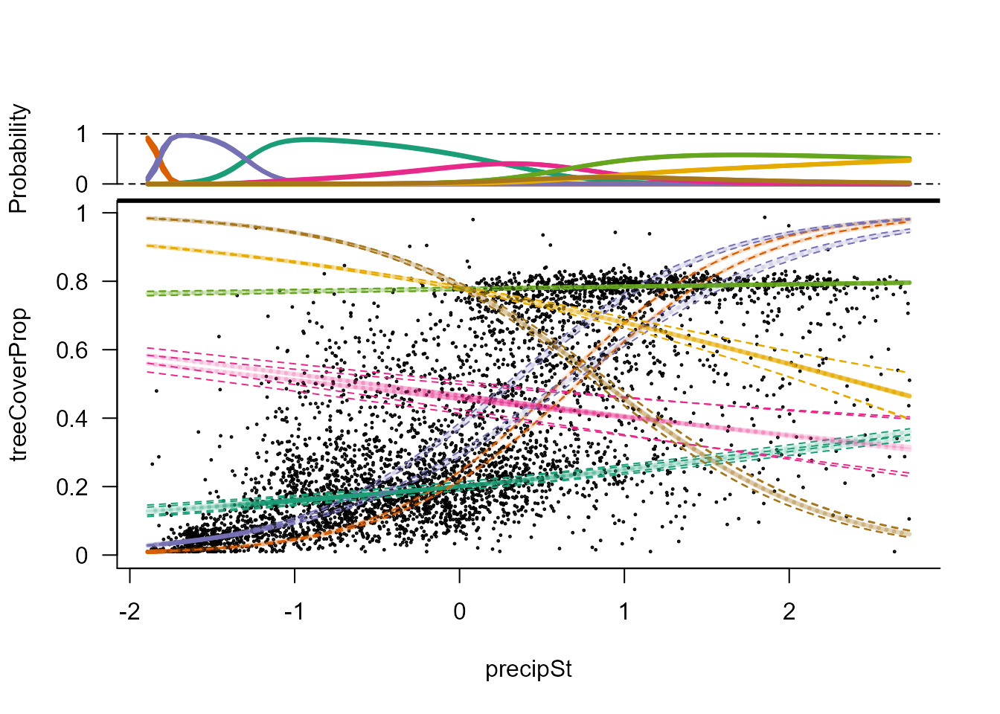
To obtain the overall stability landscape, we use the
landscapeMixglm() function. By default, it shows stable
states in blue and tipping points in red with scaled probability density
as a background. Small “bumps” in the stability landscape are unlikely
to denote real stable states. To avoid them, we set the
threshold value to be higher than zero.
landscapeMixglm(modP)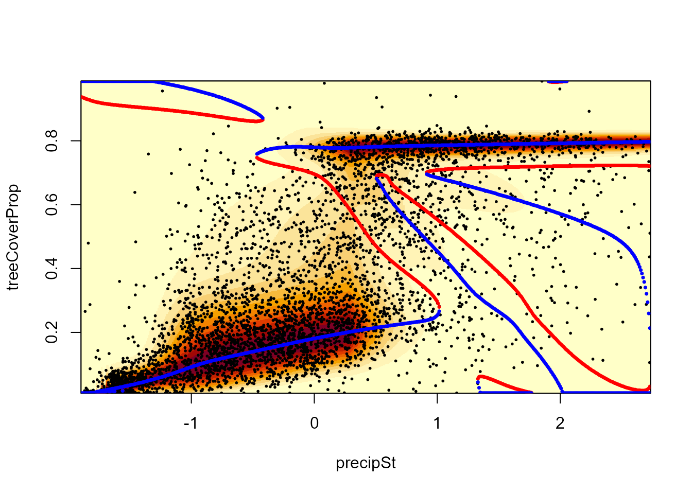
# Threshold = 0.1 and original precipitation values (x-axis)
landscapeMixglm(modP, threshold = 0.1, axes = FALSE, xlab = "Precipitation (mm/yr)",
ylab = "Tree cover (%)")
axis(2, labels = 0:5*20, at = squeeze(0:5/5), las = 2)
axis(1, labels = c(0:4*1000), at = st(c(0:4*1000), datTC$precip))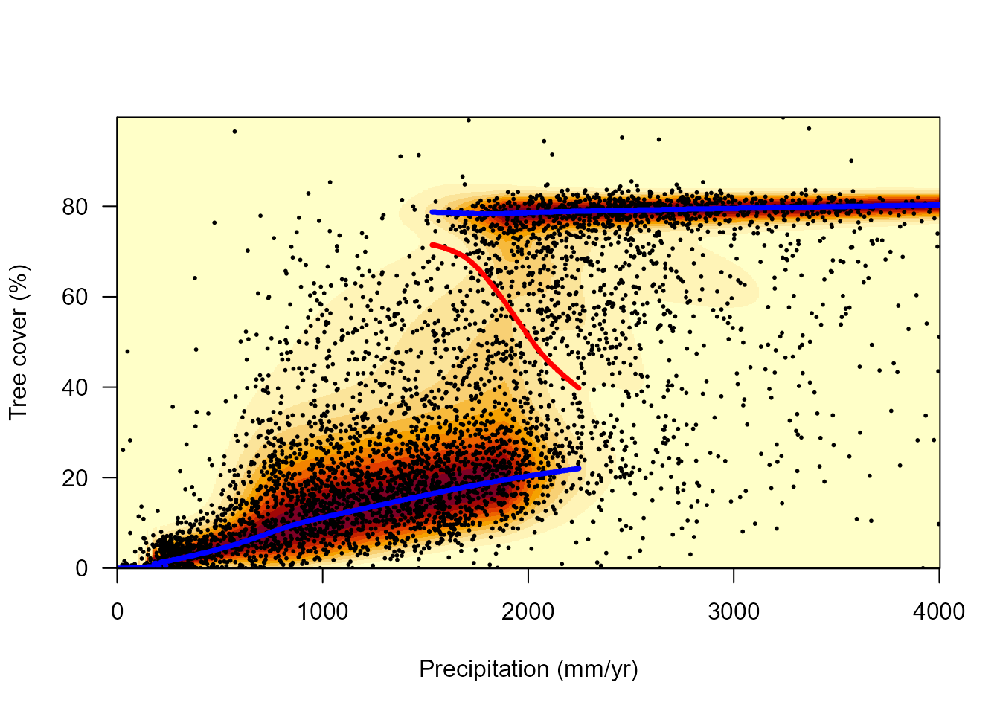
The same function can be used to visualize uncertainty by plotting the stability landscape based on random posterior samples. The background shows the standard deviation of these landscapes. Since the plotting can be slow with a higher number of samples, we use only 5 here.
landscapeMixglm(modP, threshold = 0.1, randomSample = 5)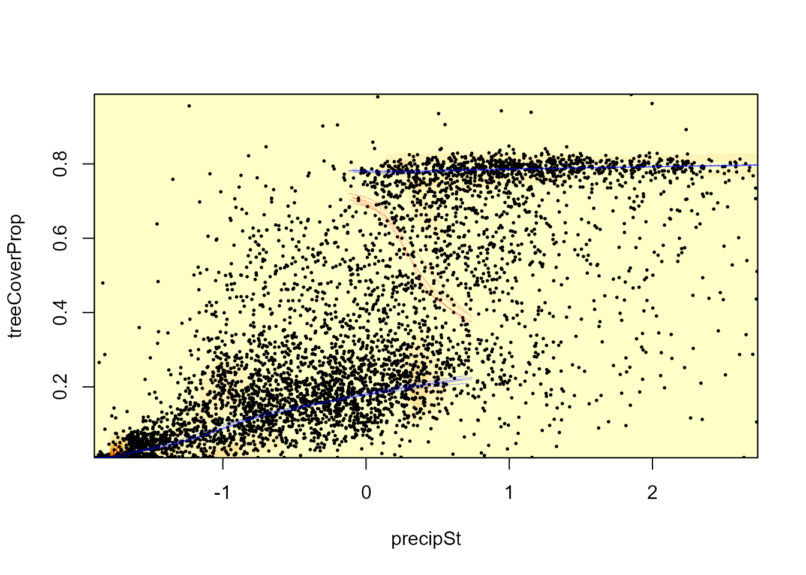
We can explore the stability curves for any precipitation value using
the sliceMixglm() function. Since we used standardized
precipitation as a predictor, we need to standardize the precipitation
value for which we want the stability curve. In addition to the
stability curve, the figure also shows estimates of each component at
the specified precipitation value.
sliceMixglm(modP, value = st(2000, datTC$precip))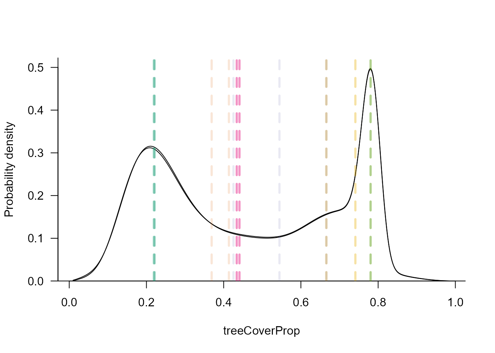
Maps of domains and resilience
Since the stability landscape can be complex, with theoretically many
stable states, there is no general way to assign observations to domains
of individual stable states. In this case study, however, it is
relatively simple since we identified two clearly distinct stable
states. First, we use the function predict() to obtain the
stable states and tipping points for all modeled observations (along
with resilience measures which we will use later). The function
predict() calculates the stability curve for each
observation (modeled or provided as a newdata) and returns
its stable states (state == 1) and tipping points with
scaled probability density, response variable value
(treeCoverProp), and whether they satisfy the threshold
(catSt == 1).
pred <- predict(modP, threshold = 0.1)
# Stable states and tipping points for observation 3
tipStable3 <- pred$tipStable[[3]]
tipStable3
#> probDens resp state catSt
#> 3 0.4098253 0.2162848 1 1
#> 1 0.1521568 0.4597204 0 1
#> 4 0.2650052 0.6699158 1 0
#> 2 0.2642923 0.6933795 0 0
#> 5 1.0000000 0.7813682 1 1
# Stability curve for observation 3 with stable states (blue) and
# tipping points (red) (full circles when they satisfy the threshold)
plot(pred$probCurves$X3 ~ pred$sampledResp, type = "l", xlab = "treeCoverProp",
ylab = "Probability density (scaled)")
cols <- c("red", "blue")
points(tipStable3$resp, tipStable3$probDens, col = cols[tipStable3$state + 1],
pch = c(1, 16)[tipStable3$catSt + 1])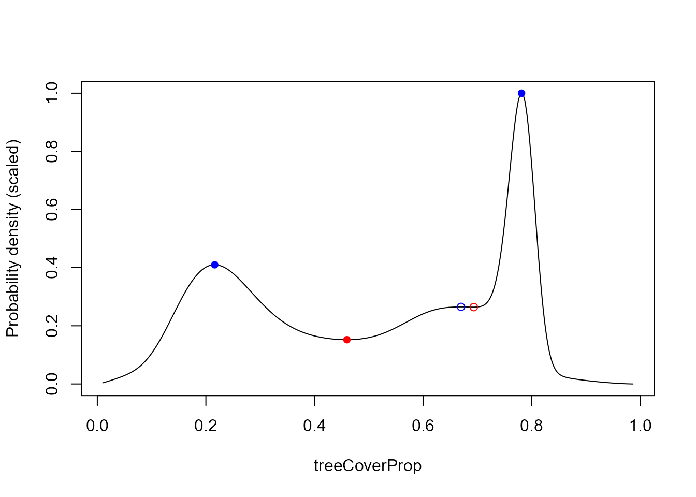
# A function to determine the domain (for this case study!)
isDomainForest <- function(tipStable, resp){
# Extract response of stable states/tipping points which satisfy the threshold
stateResp <- tipStable$resp[tipStable$state > 0.5 & tipStable$catSt == 1]
tipResp <- tipStable$resp[tipStable$state < 0.5 & tipStable$catSt == 1]
stateResp <- stateResp[!is.na(stateResp)]
tipResp <- tipResp[!is.na(tipResp)]
# Auxiliary function to provide minimum of x or Inf if x has length 0
minE <- function(x) if (length(x) == 0) Inf else min(x)
# Response value of domain's stable state
domainStateResp <- c(stateResp[stateResp <= resp &
resp - stateResp < minE((resp - tipResp)[resp - tipResp > 0])],
stateResp[stateResp > resp &
stateResp - resp < minE((tipResp - resp)[tipResp - resp > 0])])
if (length(domainStateResp) < 1) NA else
# Domain with response value of stable state above 0.6 is always forest
if (domainStateResp > 0.6) 1 else 0
}
domainForest <- mapply(isDomainForest, pred$tipStable, datTC$treeCoverProp)
# Visual check
landscapeMixglm(modP, threshold = 0.1, addPoints = FALSE)
points(datTC$precipSt, datTC$treeCoverProp,
col = c("lightgreen", "darkgreen")[domainForest + 1])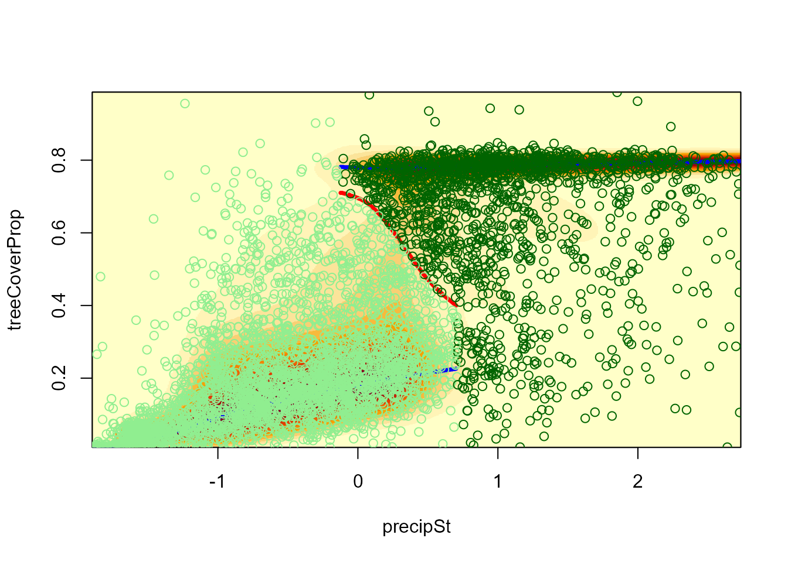
# Map of domains
plot(datTC$x, datTC$y, col = c("lightgreen", "darkgreen")[domainForest + 1],
pch = 15, xlab = "Longitude (°)", ylab = "Latitude (°)", asp = 1, cex = 0.5)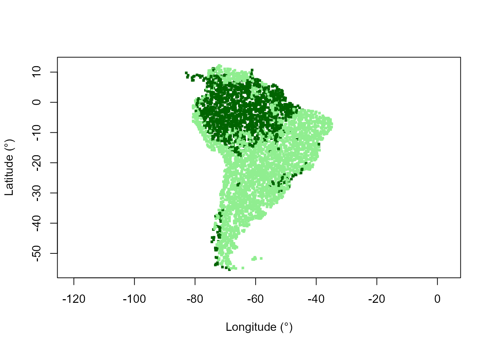
The function predict() can be also used for prediction
by specifying the argument newdata. For example, we can
predict domains for precipitation at the end of 21st century:
# Future precipitation is used for domain prediction which is forest for all
# values over 4000
datTC$precip2100[datTC$precip2100 > 4000] <- 4000
predF <- predict(modP, threshold = 0.1,
newdata = data.frame(precipSt = st(datTC$precip2100, datTC$precip)))
domainForestF <- mapply(isDomainForest, predF$tipStable, datTC$treeCoverProp)
# Map of predicted domains
plot(datTC$x, datTC$y, col = c("lightgreen", "darkgreen")[domainForestF + 1],
pch = 15, xlab = "Longitude (°)", ylab = "Latitude (°)", asp = 1, cex = 0.5)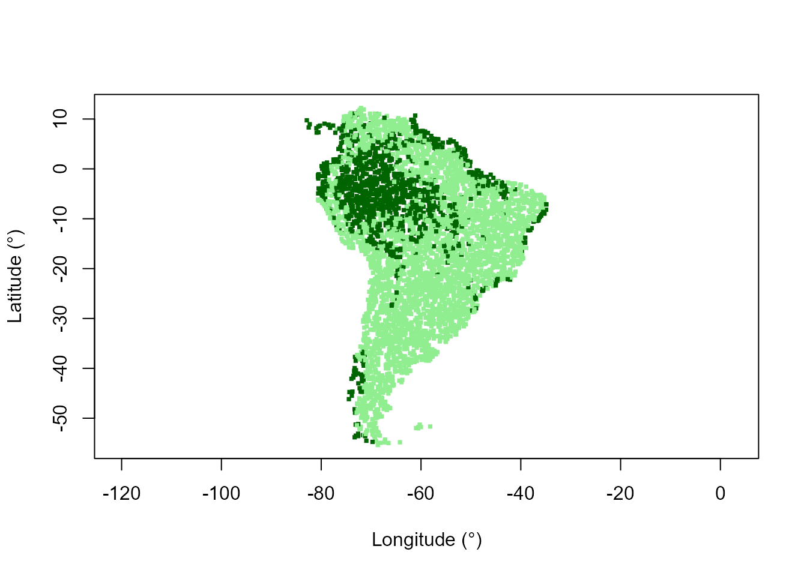
We can similarly plot various resilience measures stored in
pred$obsDat:
# A function to assign colors to a continuous measure
assignColor <- function(dat, col){
sq <- seq(min(dat, na.rm = TRUE), max(dat, na.rm = TRUE), length.out = length(col)+1)
col[findInterval(dat, sq, all.inside = TRUE)]
}
# Map of resilience (potential depth)
potentialDepthCol <- assignColor(pred$obsDat$potentialDepth, heat.colors(130)[1:100])
plot(datTC$x, datTC$y, col = "grey", pch = 15, xlab = "Longitude (°)",
ylab = "Latitude (°)", asp = 1, cex = 0.5)
points(datTC$x, datTC$y, col = potentialDepthCol, pch = 15, cex = 0.5)Stability landscape with multiple predictors
Package mixglm allows for specification of multiple predictors for each mixture component (and also for mean, precision, and probability). This is desirable because relevant external conditions (such as climate) cannot be often captured using a single predictor. The downside is that it increases dimensionality of the model which then cannot be easily visualized in 2D. To illustrate mixglm model with multiple predictors, we add temperature as a predictor to our case study of tree cover in South America.
set.seed(21)
modPT <- mixglm(
stateValModels = treeCoverProp ~ precipSt + tempSt,
stateProbModels = ~ precipSt + tempSt,
statePrecModels = ~ precipSt + tempSt,
stateValError = "beta",
inputData = datTC,
numStates = numStates,
mcmcChains = 2
)We can still use the 2D visualization functions plot()
and landscapeMixglm(). However, they show us only one
gradient, with either the other predictor fixed to zero or (in the case
of landscapeMixglm()) a specified value. Therefore, fit of
lines to observations can be misleading. Keep in mind that we see just
one cross-section of the stability landscape.
# Fitted mixture components along temperature gradient (for precipSt == 0)
plot(modPT, form = treeCoverProp ~ tempSt)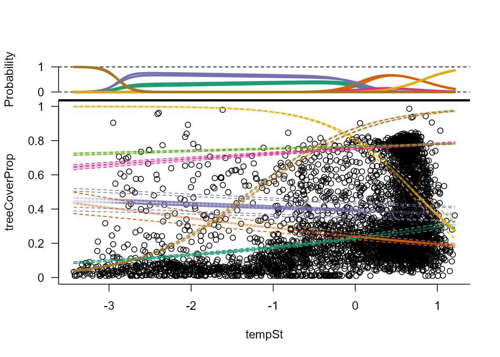
# Stability landscape along temperature gradient (for precipSt == 0)
landscapeMixglm(modPT, treeCoverProp ~ tempSt, threshold = 0.1, addPoints = FALSE)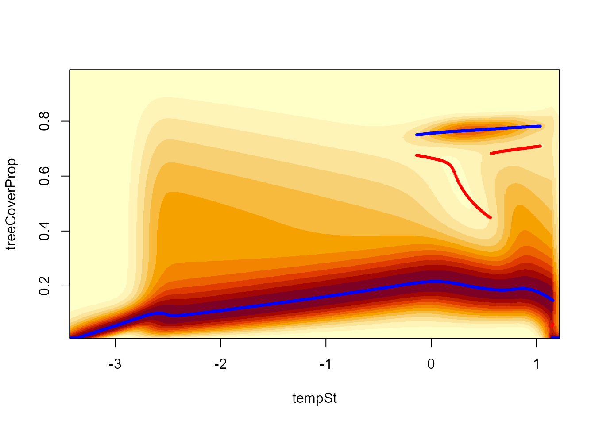
# Stability lanscape along precipitation gradient (for temperature 20°C)
landscapeMixglm(modPT, treeCoverProp ~ precipSt, threshold = 0.1,
otherPreds = setNames(st(20, datTC$temp), "tempSt"), addPoints = FALSE)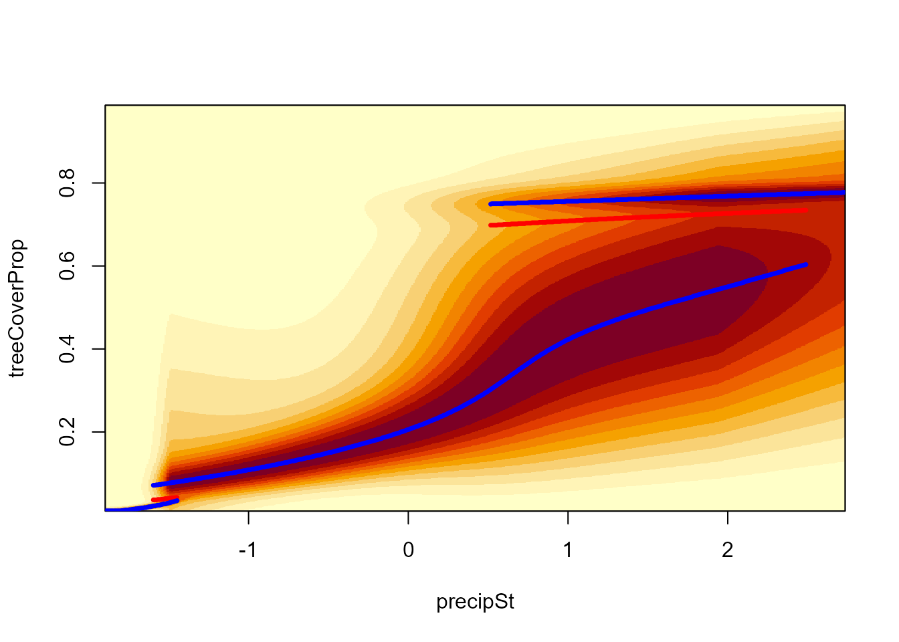
While visualization of the stability landscape is limited, stability
curves and resilience measures can be calculated for each observation
(accounting for all predictors). For that, we use function
predict():
predPT <- predict(modPT, threshold = 0.1)
# Stability curve for observation 1
plot(predPT$sampledResp, predPT$probCurves$X1, type = "l")
# Stable states for each observation
stableStates <- lapply(predPT$tipStable, function(x) x$resp[x$state > 0.5 & x$catSt > 0.5])
# Number of stable state
nStableStates <- vapply(stableStates, length, FUN.VALUE = 1L)
max(nStableStates)
#> [1] 2
# Observations with alternative stable states (red)
plot(datTC$precip, datTC$temp, xlab = "Precipitation (mm/yr)", ylab = "Temperature (°C)",
col = c("grey", "red")[nStableStates])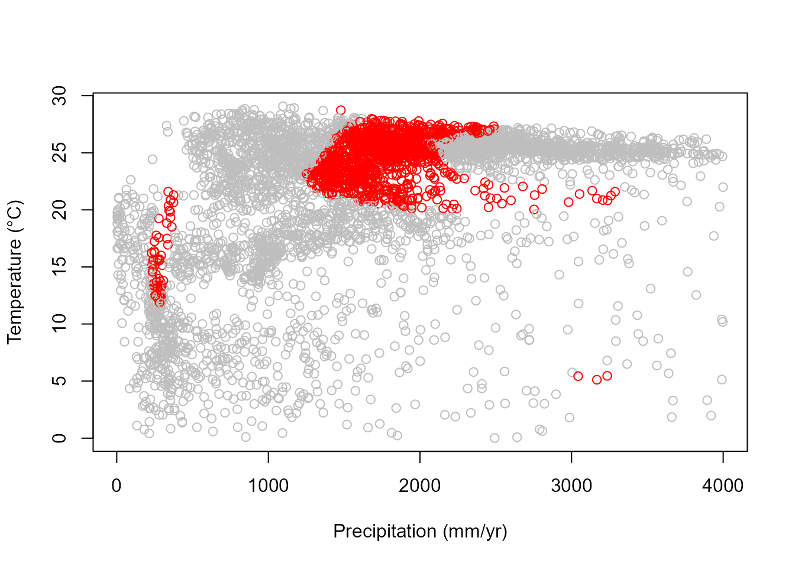
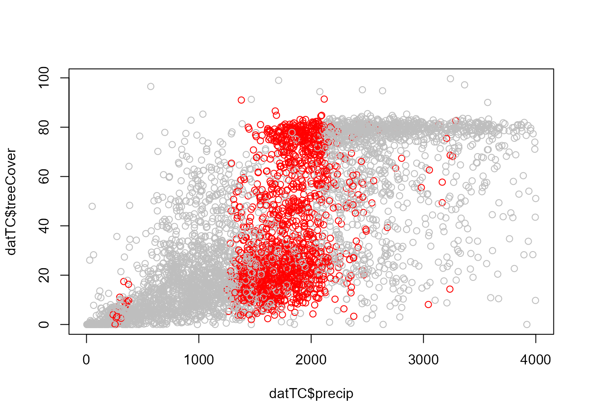
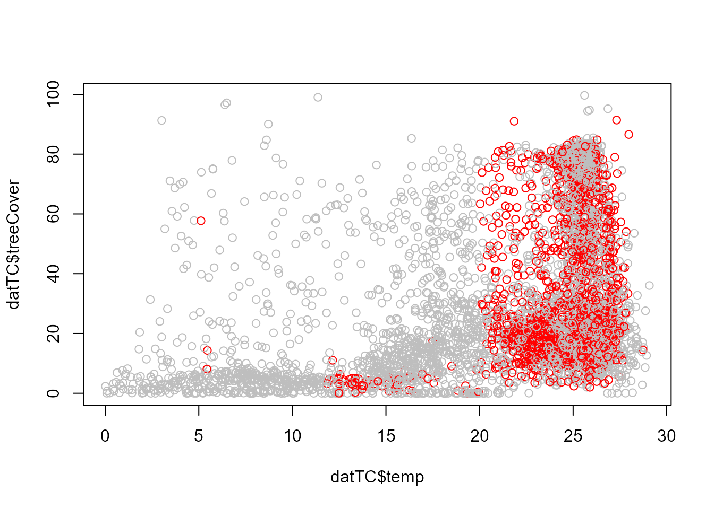
# Map of resilience (potential depth)
potentialDepthPTCol <- assignColor(predPT$obsDat$potentialDepth, heat.colors(130)[1:100])
plot(datTC$x, datTC$y, col = "grey", pch = 15, xlab = "Longitude (°)",
ylab = "Latitude (°)", asp = 1, cex = 0.5)
points(datTC$x, datTC$y, col = potentialDepthPTCol, pch = 15, cex = 0.5)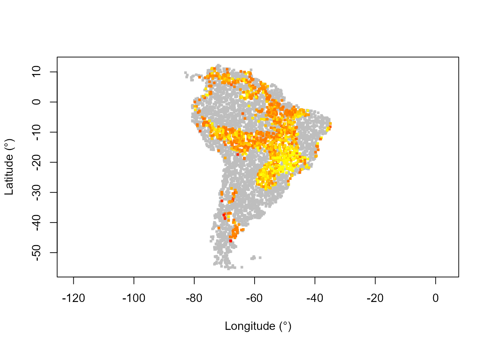
Correlation of predictors
In this case study the predictors are not highly correlated (Pearson correlation coefficient is 0.46). However, in many ecological studies, high correlation among potential predictors is common. We can expect mixglm to behave similarly to other regression models when used with correlated predictors. Estimates of their effects will not be reliable, MCMC chains might not converge well unless regularized using informative priors. The overall stability landscape would be affected less than, for example, predictions for new data, which would be unreliable. Generally, we recommend avoiding highly correlated predictors when possible (or making sure that the results are not affected by this correlation).
Absence of alternative stable states
In a large part of South America, we have not found any alternative stable states along precipitation and temperature gradients. This will be the case for many systems with some having only one stable state of its ecosystem state variable along the whole predictor gradient. Although some measures of resilience are not defined for these areas or cases (for example, distance to the closest tipping point), mixglm provides other measures of ecological resilience which can be computed and thus used to characterize the state of the ecosystem.
# Map of resilience (distance to stable state)
distStatePTCol <- assignColor(predPT$obsDat$distToState,
rev(heat.colors(130)[1:100])) # High distance to state is red
plot(datTC$x, datTC$y, col = "grey", pch = 15, xlab = "Longitude (°)",
ylab = "Latitude (°)", asp = 1, cex = 0.5)
points(datTC$x, datTC$y, col = distStatePTCol, pch = 15, cex = 0.5)
# Stable state tree cover
stateResp <- lapply(predPT$tipStable, function(x) x$resp[x$state > 0.5 & x$catSt > 0.5])
tipResp <- lapply(predPT$tipStable, function(x)
{out <- x$resp[x$state < 0.5 & x$catSt > 0.5]; out[!is.na(out)]})
# Function to select the state in which domain is the observation (from 2 states)
getState <- function(state, tip, resp){
stateDist <- state - resp
signState <- sign(stateDist)
signTip <- sign(tip - resp)
if (all(signState == 1) | all(signState == -1) | all(signState == 0))
state[abs(stateDist) == min(abs(stateDist))] else state[signState != signTip]
}
stateRespObs <- mapply(getState, stateResp, tipResp, datTC$treeCoverProp)
# Map of stable state tree cover
statePTCol <- assignColor(stateRespObs,
rev(terrain.colors(130)[1:100])) # High tree cover is green
plot(datTC$x, datTC$y, col = statePTCol, pch = 15, xlab = "Longitude (°)",
ylab = "Latitude (°)", asp = 1, cex = 0.5)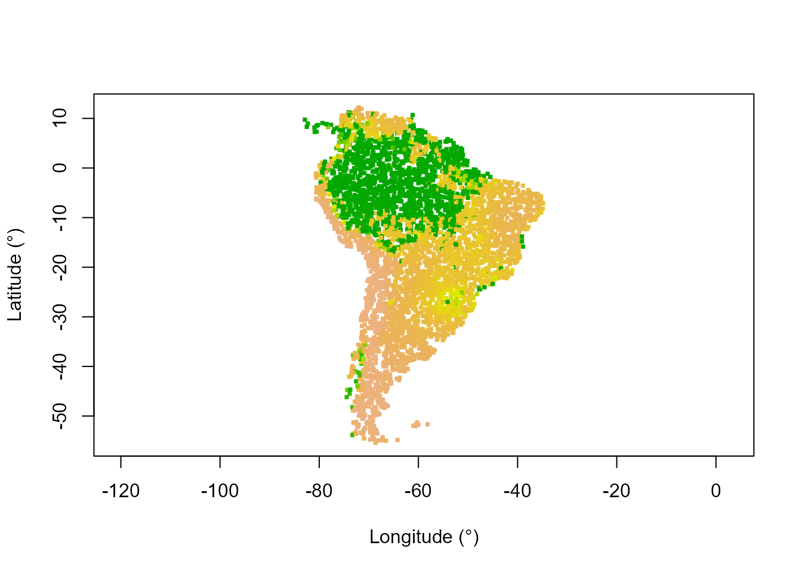
References
↑ Flores, B.M.,
Montoya, E., Sakschewski, B. et al. 2024. Critical transitions in the
Amazon forest system. Nature 626, 555–564. doi.org/10.1038/s41586-023-06970-0
↑ Hirota, M., M.
Holmgren, E. H. van Nes, and M. Scheffer. 2011. Global resilience of
tropical forest and savanna to critical transitions. Science
334: 232–235. doi.org/10.1126/science.1210657
↑ Watanabe, S. 2013.
A widely applicable bayesian information criterion. Journal of
Machine Learning Research 14: 867–897. Link